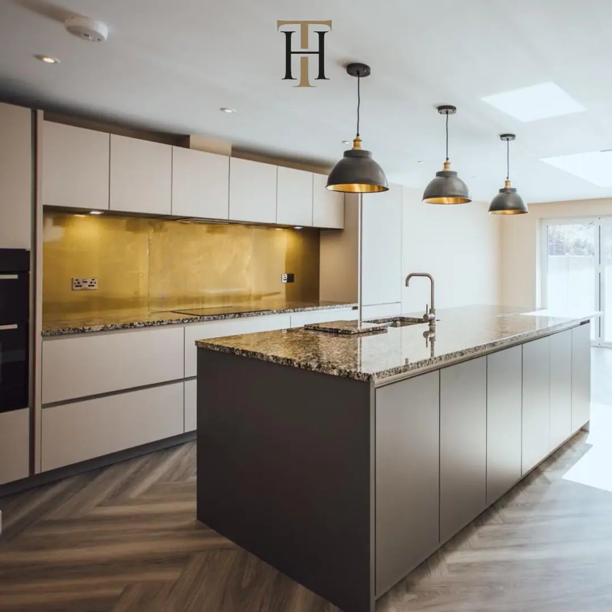

Think of brass in interiors and the first thing that springs to mind is probably bold, dark colours. It’s true that both natural and aged brass work well with deep tones: forest greens, teals, turquoises and navy blues, but there’s another, fresher way to work with this versatile metal. Combining gold with white and other neutrals creates an understated look with a heavenly sense of calm. It’s a similar approach to fashion: think pale, floaty linens paired with natural brass bangles and layered gold necklaces. By employing a plain backdrop, you’re letting those gorgeous gold tones of the brass speak for themselves. Go for tranquil and breezy with a subtle glint of gold, or add statement brass pieces to enliven a low-key room. Here’s how to bring this angelic aesthetic into your space.
- Light Up
One of the most impactful ways to use brass is in lighting. The metal becomes a centrepiece of the room, a golden giver of light. Take these oversized, patinated brass lighting features, for instance. They’re true focal points, bringing drama to the neutral woods and textured concrete that dominate the rest of the room.
2. Stairway to Heaven
Minimalist and magical might be two words you wouldn’t expect to describe one design, but with this statement staircase, Storage Associati achieved both. The gleaming brass stairway is located in the flagship store of Golran designer rugs, in fashion capital Milan. Is that a shimmering copper floor we see there too?
3.Brass with Class
We couldn’t resist including more stairs when we discovered Brass House. Designed by Simon Astridge, this family home in London is brimming with beautiful brass. But there are more than stairs made of the gold-coloured metal in this house. This picture shows a hint of the lustrous cabinetry in the light-filled kitchen. The house is filled with matching features in almost every room, from brass wall panels to taps and even bathroom tiles.
4. A Juxtaposition
Brass is the star of the show at Say No Mo, a beauty salon and cocktail bar combined in Kyiv. Designers Balbek Bureau worked hard to avoid the traditional gender stereotypes associated with beauty salons. Crumbling concrete sets the perfect stage for that brass wall panelling to really shine. There are even hairline cracks in the white floor tiles, filled in with… you guessed it: brass.
5. Stand-out Sculpture
Not ready to clad your walls in brass quite yet? A simple – and less committal – way to introduce brass to your interiors is with moveable art. Pick statement brass wall art or a freestanding sculpture like this abstract textured beauty. It’s a smart way to add instant glam without going overboard – and decide whether the white and gold look is for you.
6. Statement Walls
One of the easiest rooms you can experiment with the neutral and gold look in is your bathroom. If yours has a white suite, there’s already plenty of plain space to play with. You can start adding brass accents gradually: taps, wall hooks, accessories, before you’re ready to go out and add a jaw-dropping feature wall like this. A similarly stunning look could be achieved with easy-to-install aged brass sheets . Our Somerset finish ‘stained glass’ brass would work a treat.
7. Golden Touch
Here’s a shining example of how you can introduce gold and white to your home without making permanent changes. Makeovers like this are perfect for renters. A plain room with a white sofa is brought to life with the addition of brass shelves and cocktail trolleys, textured rugs, an opulent palm-tree floor lamp and a standout golden pineapple. A similar look could be achieved in a bedroom, with a brass bed frame and acres of soft white bedding.
8. Super Splashbacks
It’s so easy to transform your kitchen with the addition of a brass splashback . You can go for a full-length model like this one, or opt for something smaller and squarer to fit neatly behind your hob or sink. We love how this aged brass splashback matches the bank of creamy wall units, and the flash of matching brass on the inside of those light pendants. Aged brass offers a wealth of texture, and is lacquered to lock in the look and make it easy to clean.
9. Let the Walls Talk
Abstract, gold patterns on this unique wallpaper make for a modern take on the white and gold aesthetic. There’s an element of playfulness, here too, with the gold-coloured plant in the head-shaped pot. We love the addition of texture from the wall art and the wooden furniture. Here, the pale background is emboldened by the statement brass sconces. This wallpaper would look incredible in a room with a statement brass feature wall.
10. Feature Length
Now that’s a statement wall. It’s the perfect backdrop for the opulent brocade sofa and pale herringbone parquet flooring. This high-end look would be very easy to achieve with the installation of some aged brass panels. You have a choice of finishes, depending on the level of depth and texture you’re looking to achieve. A distressed brass like our Wiltshire finish would look really striking, as would the more subtle Cambridgeshire design.


If you can dream it, we’ll make it.
Bars, balustrades, staircases, worktops, cladding and pieces that don’t have a name yet. Our designers and craftspeople work in brass, copper, zinc and steel, and alongside wood.